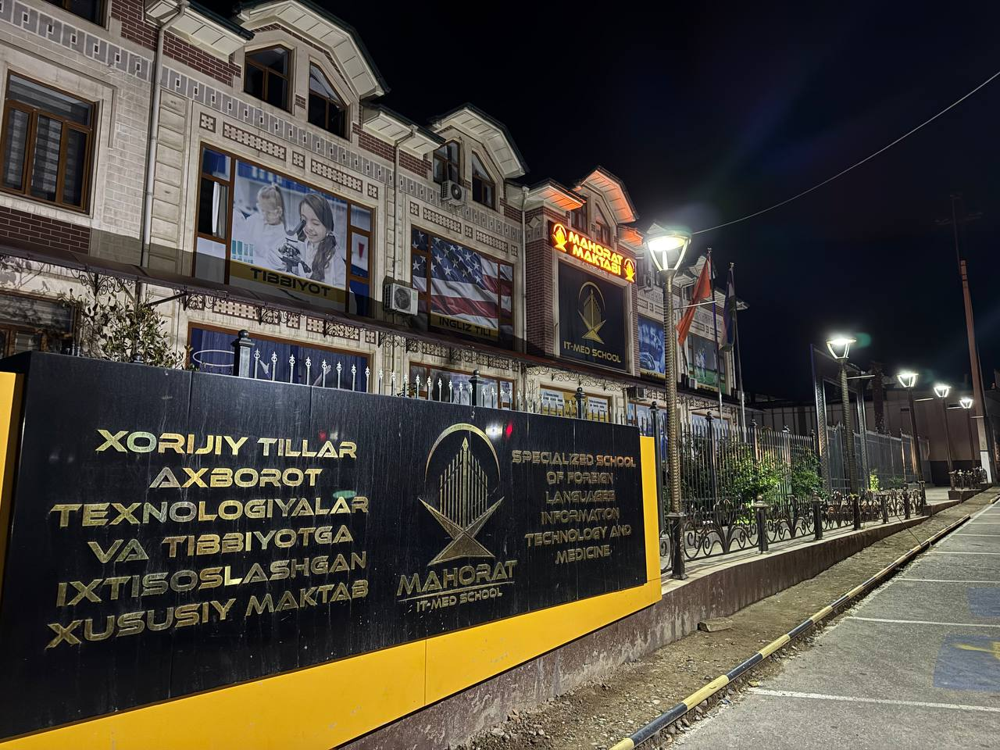
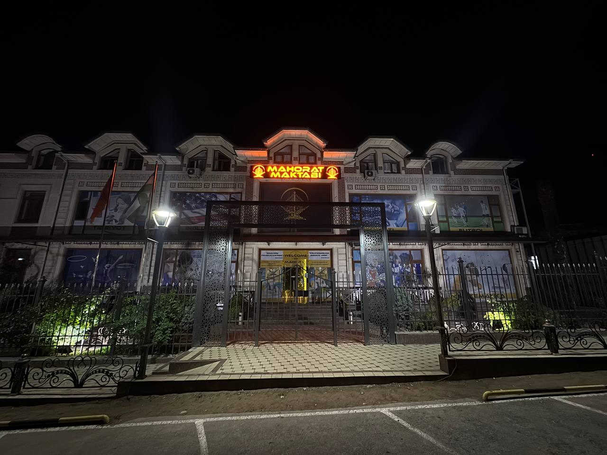

Har bir sinfda o‘quvchining faolligini ko‘rish va ustoz e’tiborini oshirish uchun guruhlar me’yorida shakllantiriladi.
Mahorat maktabi uchun rasmiy sayt
Farzandingiz uchun tartibli, iliq va zamon bilan hamnafas ta’lim muhiti
Bu maktabda bilim faqat dars bilan o‘lchanmaydi. Intizom, muloqot, ustoz bilan yaqindan ishlash va natijani har hafta kuzatib borish asosiy mezon hisoblanadi.
500+
faol o‘quvchilar soni
80+
malakali ustozlar jamoasi
100%
ota-onalar ishonchi

Shinam muhit
O‘quvchi markazidagi qulay sinf xonalari
Kuzatuv tizimi
Natija, davomat va topshiriqlar bir joyda
Nega aynan shu maktab tanlanadi
Asosiy ustunliklar amaliy nazorat, kuchli pedagogik jamoa va ota-ona bilan doimiy aloqaga tayangan.
Topshiriq, baho va intizom bo‘yicha qisqa tahlil shakllantirilib, ota-onaga yetkaziladi.
Asosiy fanlar bilan birga til, nutq va mantiqiy fikrlash ko‘nikmalari ham kuchaytiriladi.
Har bir bosqich tushunarli: suhbat, moslashtirish, guruhga biriktirish va boshlang‘ich kuzatuv.
Maktab muhiti va yondashuv
Sinfxona, odob va tartib bu yerda faqat qoidalar emas, kundalik odat sifatida shakllantiriladi.

Darslar reja asosida boshlanadi, kun yakunida esa uyga vazifa va individual tavsiyalar tartib bilan beriladi. O‘quvchining fikr bildirishi, savol berishi va o‘z ustida ishlashi rag‘batlantiriladi.
Bu yondashuv bolada faqat natija emas, ichki mas’uliyat ham shakllantiradi.
Bir joyda ko‘proq ma’lumot
Asosiy bo‘limlar endi bitta chiroyli slider ichida
Yo‘nalishlar, yangiliklar, foto lavhalar va qabul bosqichlari almashib turadigan ko‘rinishda berildi. Avtomatik o‘tadi, xohlasangiz qo‘lda ham boshqarasiz.